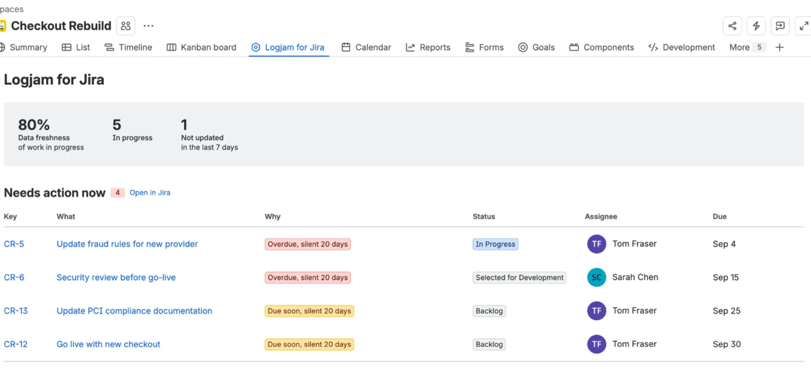
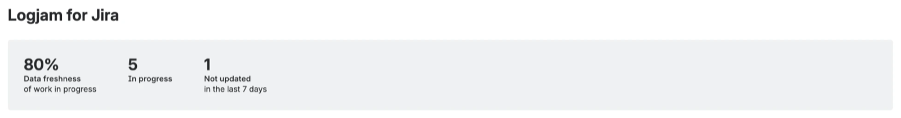
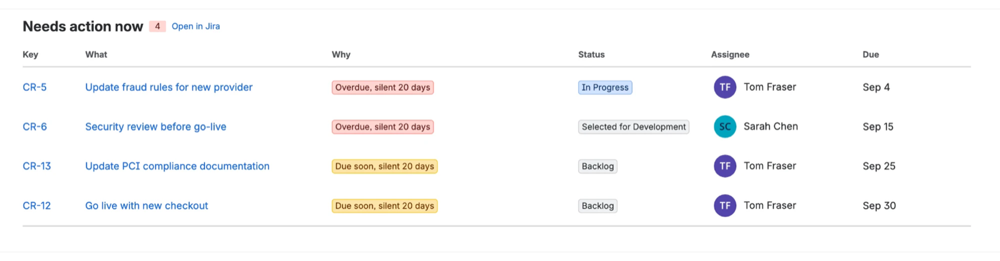
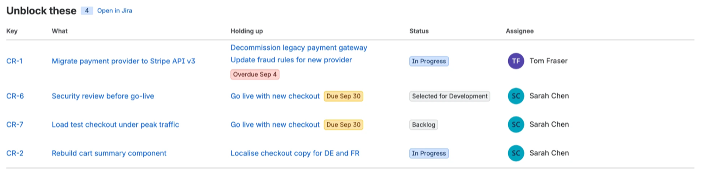

What each number means, and the rule behind it
Logjam applies a small number of fixed rules to the work items in one Jira project. Nothing is configurable, nothing is stored, and every figure on the page can be traced back to a field in Jira. This page is the whole rulebook.

Every request runs as you, not as the app. Jira enforces your own permissions, so the report can only show work items you could already open yourself. Two people opening the same project page may therefore see different numbers, and that is correct.

In progress — how many work items in the project are in a status Jira classifies as In Progress. Not the status name, the category, so your own workflow names are respected.
Data freshness — the share of those in-progress items whose updated timestamp changed within the last seven days. If the project has five items in progress and three were touched this week, it reads 60%.
Not updated in the last 7 days — the remainder of that same set.
This figure counts work in progress only. It is not the number of rows flagged below, and the two will often differ. Something sitting in a backlog column, untouched for a month, is not counted here and usually should not be: nobody touching the backlog is normal. The flagged list below has wider rules, so it can show more rows than this number suggests.
Three rules, and every one of them also requires the item to have been silent for at least seven days. Something that is overdue but was updated yesterday does not appear — somebody is clearly on it.

Epics are excluded from the silence rules. Work on an epic's children does not update the epic, so an active epic looks abandoned. Flagging them would fill the list with noise.
Completed work is excluded, and so are untouched backlog items that carry no due date.
Days since the work item's updated timestamp last changed. Jira sets that field on any edit at all — a comment, a status transition, a changed field, an added label. So the figure measures attention, not progress. An item someone commented on yesterday reads as fresh even if no work happened.
That is the intended reading. The report answers the question what has nobody looked at, which is the one worth asking before a status meeting.
The threshold was once a dropdown offering 7, 14 and 30 days. It looked like a choice of reporting period. It was not — it was a tolerance dial. Moving it to 30 did not show a different stretch of time, it simply stopped calling things stuck.
The report answers a present-tense question for a weekly cadence, so the answer is seven days and it is not adjustable. A number you can turn down until you like it is not a measurement.
Built from Jira issue links, not from statuses or text. An item appears here when another item is linked as being blocked by it.
Holding up lists the work waiting on the other end of those links, with its own due date where it has one. That is the point of the table: not that something is blocked, but what stops moving because of it.
Ordering. Blockers are ranked by the soonest deadline of the work waiting behind them — not by their own dates. A task with no due date of its own can be the most pressing thing on the board if it is holding up something due on Friday.

Only blocking links count. "Relates to" is ignored; in this context it is noise.
One limitation worth knowing. Jira lets administrators rename link types, and Logjam recognises a blocking link by finding the word "block" in its name. A link type renamed to something else — or translated into another language — will not be picked up. If your dependency table is empty and you know it should not be, that is the first thing to check.
Where a team does not maintain issue links at all, the table is empty and says so, rather than leaving you to read an empty table as good news.
The app reads up to 5,000 work items per query. Beyond that it stops and records that the answer is incomplete rather than quietly showing a partial one.
Per work item: key, summary, status, assignee, due date, last-updated timestamp, and issue links. Nothing else is requested.
Nothing is stored. The data is read when you open the page, used to render it, and discarded. See the privacy policy for the full account.
{kind=link}
{kind=link}
{kind=link}
{kind=link}